数据科学课程实验 · 2026
Transformer 在三角网格神经渲染中的应用
以 RenderFormer 为例，复现预训练渲染，比较 Bunny 与 Sponza 的受限微调，并检验相机、光源条件变化对预测的影响。
方法与网络结构
三角形的材质、法线和空间位置构成场景表示。场景 Transformer 在三角形之间交换信息；视角 Transformer 以相机射线束为查询，读取场景特征；DPT 解码器生成图像。训练使用 Cycles 参考图监督。
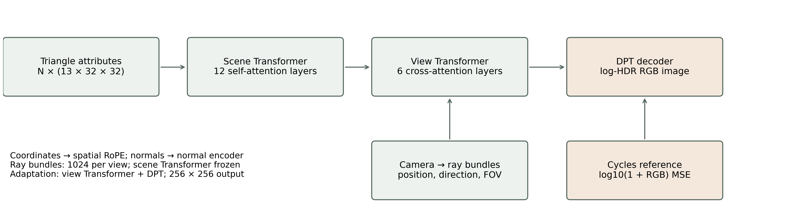
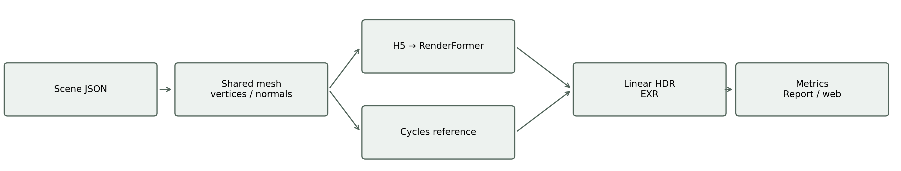
预训练复现与材质实验
先用官方康奈尔盒检查几何、相机和材质转换，再改变茶壶粗糙度与侧墙颜色。下图保留原有512像素实测，用于比较参考与模型的材质响应。
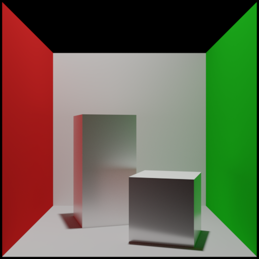
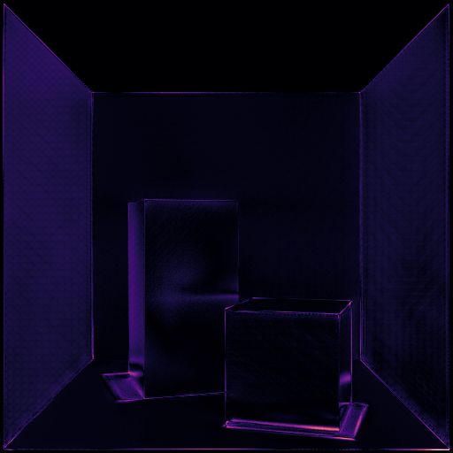
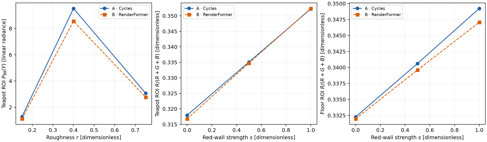
Bunny 与 Sponza 微调
冻结场景Transformer，先训练DPT，再联合适配视角Transformer与DPT，共81,560,713个可训练参数。使用18帧训练、6帧验证和6帧材质留出对照。粗糙度0.15、0.5、0.9用于训练，0.3用于验证，0.65留作测试；每个配置包含3个视图。训练和测试共享几何及相近视角，因此这里评价的是固定场景中的材质插值。
本轮使用对数HDR的L1误差与归一化空间梯度误差共同训练，先按每张图、每通道去均值并归一化，再比较边缘变化。归一化减少整体亮度和对比度差异对结构项的影响。
| 测试场景 | PSNR / dB，前→后 | SSIM，前→后 | log HDR MSE，前→后 |
|---|---|---|---|
| Bunny（3视图） | 19.61 → 35.55 | 0.835 → 0.978 | 0.00254 → 0.00008 |
| Sponza（3视图） | 3.08 → 16.47 | 0.125 → 0.577 | 0.67484 → 0.08555 |
去均值、归一化后的显示RGB梯度误差，Bunny：0.0908 → 0.0329（下降63.8%）；Sponza：0.2898 → 0.2164（下降25.3%）。该项单独检查边缘变化，数值越低越好。
Bunny
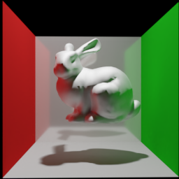
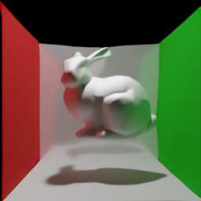
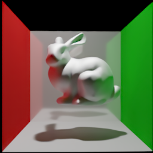
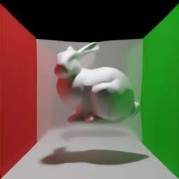
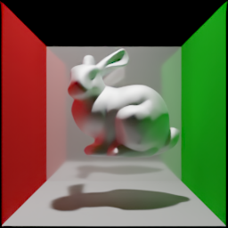
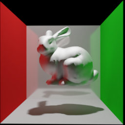
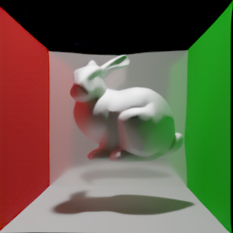
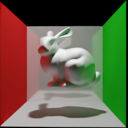
Sponza
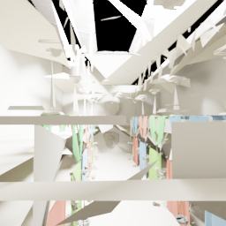
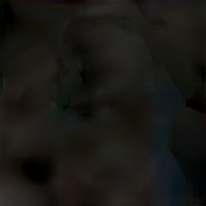
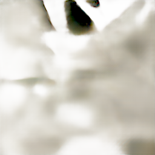
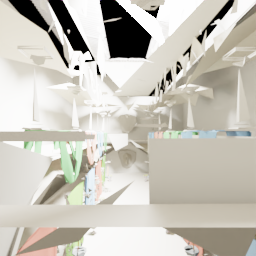
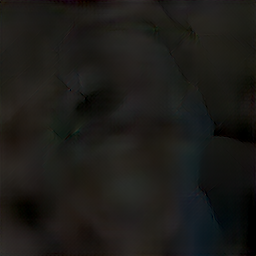
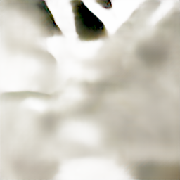
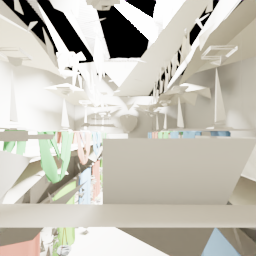
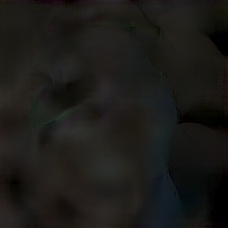
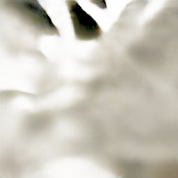
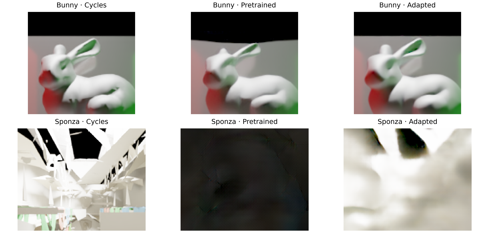
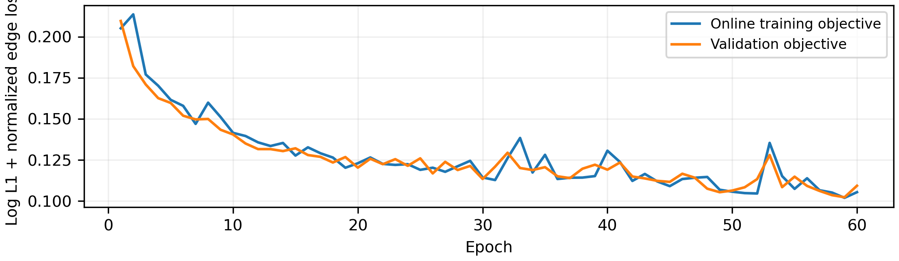
Sponza由262,267面简化为19,235面，纹理转为平均颜色，不包含原始透明与法线贴图。微调改善了这组留出配置的整体误差，但256像素图仍缺少细节，不能据此声称完整Sponza或高分辨率渲染已解决。
论文边界条件实验
以同一康奈尔盒为基准，分别移动相机、移动光源、增大光源面积，并比较9光源直接预测与逐光源预测相加。参考与模型使用相同网格、材质及相机；对应论文图10、11、13。
| 条件 | PSNR / dB | SSIM |
|---|---|---|
| 外部相机与外部光源 | 32.17 | 0.971 |
| 相机移入场景 | 12.60 | 0.810 |
| 光源移入场景 | 13.36 | 0.819 |
| 增大光源面积 | 2.75 | 0.153 |
| 9光源直接预测 | 15.32 | 0.729 |
| 9次单光源预测相加 | 10.29 | 0.727 |
外部相机与外部光源


相机移入场景


光源移入场景


增大光源面积


9光源直接预测


9次单光源预测相加


光源分解只在线性HDR中相加，随后统一色调映射。神经模型未被强制满足光传输线性，分解后的改善或退步均按实测保留。
报告与复现资料
报告 PDF报告 Word报告图与图注微调逐视图指标与训练曲线 · 边界实验指标 · 复现脚本